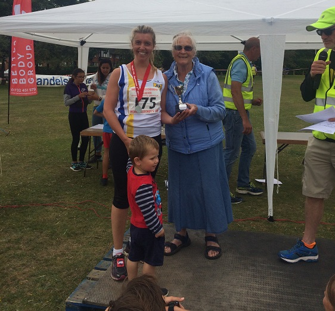

Thirteen Sevenoaks AC runners contested the Weald 10k on 3rd September, including three women who came away with the Ladies team title, collected by Silvia Forcat - left. Sally Shewell (2nd W55) and Jane Morgan completed the winning team.
Hugh Brennan led the team home in fifth (3rd M40) with Andrew Milne 10th (3rd SM). James Graham was second M60 and Ron Denney second M80.
There was also SAC success in the 2k fun run with Julia Sackville-West second female and Ollie Armes fourth overall.
The SAC results in the 10k were:
| Pos- ition | Bib- No. | Finish Time | Chip Time | Name | Gen- der | Cat- egory | Club or Team | Rank |
|---|---|---|---|---|---|---|---|---|
| 5 | 324 | 00:38:59 | 00:38:57 | HUGH BRENNAN | M | M40 | Sevenoaks AC | 1 |
| 10 | 261 | 00:40:28 | 00:40:27 | ANDREW MILNE | M | SM | Sevenoaks AC | 2 |
| 17 | 234 | 00:42:42 | 00:42:41 | JAMES GRAHAM | M | M60 | Sevenoaks AC | 3 |
| 35 | 184 | 00:46:01 | 00:45:59 | STUART THOMPSON | M | M40 | Sevenoaks AC | 4 |
| 50 | 206 | 00:47:04 | 00:46:55 | SIMON BISHOP | M | M50 | Sevenoaks AC | 5 |
| 58 | 154 | 00:48:33 | 00:48:28 | SIMON HALLPIKE | M | M60 | Sevenoaks AC | 6 |
| 71 | 156 | 00:50:51 | 00:50:46 | SARAH SHEWELL | F | W55 | Sevenoaks AC | 7 |
| 90 | 82 | 00:52:37 | 00:52:27 | JANE MORGAN | F | W35 | Sevenoaks AC | 8 |
| 98 | 175 | 00:53:55 | 00:53:41 | SILVIA FORCAT | F | W35 | Sevenoaks AC | 9 |
| 125 | 87 | 00:56:05 | 00:55:56 | NEIL HAGGERTAY | M | M50 | Sevenoaks AC | 10 |
| 133 | 304 | 00:56:59 | 00:56:49 | ADAM WESTBROOKE | M | M40 | Sevenoaks AC | 11 |
| 168 | 166 | 01:00:38 | 01:00:21 | CHRIS PORTER | M | M40 | Sevenoaks AC | 12 |
| 237 | 1 | 01:10:10 | 01:09:59 | RONALD DENNEY | M | M80+ | Sevenoaks AC | 13 |
The full 10k results are here.
The SAC results in the 2k were:
| Pos- ition | Bib- No. | Finish Time | Chip Time | Name | Gen- der | Cat- egory | Club or Team | Rank |
|---|---|---|---|---|---|---|---|---|
| 4 | 577 | 00:08:38 | 00:08:37 | OLLIE ARMES | M | U/12 | Sevenoaks AC | 1 |
| 10 | 610 | 00:09:19 | 00:09:18 | HARVEY TAYLOR | M | O/11 | Sevenoaks AC | 2 |
| 17 | 575 | 00:09:57 | 00:09:57 | JULIA SACKVILLE-WEST | F | O/11 | Sevenoaks AC | 3 |
| 30 | 673 | 00:11:02 | 00:11:01 | TABITHA ELCOCK-HASKINS | F | U/12 | Sevenoaks AC | 4 |
| 37 | 576 | 00:11:18 | 00:11:18 | EMMA SACKVILLE-WEST | F | U/12 | Sevenoaks AC | 5 |
| 77 | 672 | 00:13:13 | 00:13:10 | HENRY ELCOCK-HASKINS | M | O/11 | Sevenoaks AC | 6 |
| 161 | 643 | 00:18:22 | 00:18:12 | CLAIR THORNTON | F | O/11 | Sevenoaks AC | 7 |
| 180 | 543 | 00:24:16 | 00:23:58 | ETHAN NICOLL FORCAT | M | U/12 | Sevenoaks AC | 8 |
The full 2k result is here.